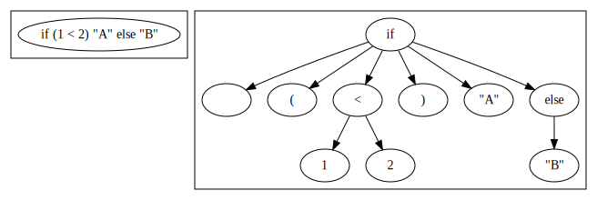
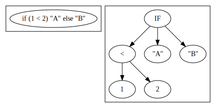

<!doctype html>
<html lang="ja">

<head>
<meta charset="utf-8">

<title>新しいプログラミング言語の学び方 ~パーザコンビネータライブラリで学ぶScala~</title>

<meta name="description" content="新しいプログラミング言語の学び方 ~パーザコンビネータライブラリで学ぶScala~">
<meta name="author" content="水島宏太">

<meta name="apple-mobile-web-app-capable" content="yes">
<meta name="apple-mobile-web-app-status-bar-style" content="black-translucent">

<meta name="viewport" content="width=device-width, initial-scale=1.0, maximum-scale=1.0, user-scalable=no, minimal-ui">

<link rel="stylesheet" href="css/reveal.css">
<link rel="stylesheet" href="css/theme/black.css" id="theme">
<style type='text/css'>     
  .reveal h1,               
  .reveal h2,               
  .reveal h3,               
  .reveal h4,               
  .reveal h5,               
  .reveal h6 {              
    text-transform: none;   
  }                         
</style>                    

<!-- Code syntax highlighting -->
<link rel="stylesheet" href="lib/css/zenburn.css">

<!-- Printing and PDF exports -->
<script>
	var link = document.createElement( 'link' );
	link.rel = 'stylesheet';
	link.type = 'text/css';
	link.href = window.location.search.match( /print-pdf/gi ) ? 'css/print/pdf.css' : 'css/print/paper.css';
	document.getElementsByTagName( 'head' )[0].appendChild( link );
</script>

<!--[if lt IE 9]>
<script src="lib/js/html5shiv.js"></script>
<![endif]-->
</head>

<body>

<div class="reveal">

<!-- Any section element inside of this container is displayed as a slide -->

<div class='slides'>
<section data-markdown data-separator='^\n---$'><script type='text/template'>

## 新しいプログラミング言語の学び方 
## ~パーザコンビネータライブラリで学ぶScala~
## Scala福岡2019
## 2019/01/19（土）
## 水島宏太

---

### 自己紹介

- Japan Scala Association代表理事
- 株式会社ドワンゴ所属
  - [Scala研修テキスト](https://dwango.github.io/scala_text/) 主著者
- プログラミング言語好き
  - **Scala**, Nemerle, Racket, etc.
- プログラミング言語作ってます
  - Onion (Suspended)
  - **Klassic**
- プログラミング言語教育に興味があります
  - 『実践Scala入門』共著者

---

### 今日のテーマ

# 新しいプログラミング言語の学び方
### （ただし、第二言語以降）

---

### 注意

- こういう学び方が良いとは限りません
- あくまで参考程度に聞いてください

---

### よく見る意見（１）

一つの言語を学んでいれば他の言語はすぐわかる

- **具象**構文が異なるなどの**些細**な点でつまづくことも

---

### よく見る意見（２）

- 未知のパラダイムの言語を理解するのは簡単ではない

割と正しい気がするが、（多くの）プログラミング言語全体に共通する特性を理解
できればより楽な気も…

---

### 私の意見

- （多くの）プログラミング言語に共通する構造を理解するのが重要
  - 具象構文
  - 抽象構文
  - 型システム
  - 意味論（実行モデル）
- 難解な型システムや意味論を持った言語でなければ大体適用できる
- 言語のおおざっぱな全体像を非常に高速に理解できる
  - …可能性が高い

---

### 具象構文

- カジュアルに構文と言うときこれを指すことが多い
- `if`式の構文（自然言語による）
  - 最初にキーワード `if`が来る
  - その次に `(`が来る
  - その次に 条件式が来る
  - その次に `)` が来る
  - その次に、条件が満たされた時の式が来る
  - その次に、キーワード `else`が来る
  - 以下略
- 後で不要になる情報も含む
  - 空白文字、キーワード名など

---

### 具象構文とBNF

- 具象構文はBNF（Backus-Naur Form）で厳密に定義可能
- 例：

```
Expression ::= "if" "(" Expression ")" "else" ...
             |  ...;
```

---

### 具象構文と具象構文木

- 具象構文にしたがったプログラムを木にしたもの



---

### 具象構文に関する注意

- 具象構文はあくまで見た目（UI）を定義しているだけ
- 本質的な構造より余分な情報を含んでいる
  - 空白文字
  - セミコロン
  - カンマ
  - , etc.

---

### 抽象構文

- 具象構文から、プログラムの解釈に不要な情報を削除したもの
- 例：
  - `if`式は3つの式からなる（木が3つの子を持つ）
    - `cond`式 
    - `then`式
    - `else`式

```
Expression ::= IF (cond:Expression, then:Expression, else:Expression)
            | ...;
```

---

### 抽象構文と抽象構文木

- 具象構文木から不要な情報を削ったもの



---

### 型システム

- 型がある言語における、型同士の互換性に関する規則集
  - ちょっと語弊あり
- 型がない言語では意味がない
  - 「いわゆる」動的型付き言語
- おおざっぱには次の要素を持つかが重要
  - 派生型（サブタイピング）
    - 構造的部分型と名前的部分型
  - 多相型（ジェネリクス）

---

### 派生型（名前的部分型）

- 継承関係がある型同士でのみ発生する

```scala
class Foo { def foo: String = "Foo" }
class Bar extends Foo

// Bar型の値はBar型の変数に代入可能
// Bar型の値はFoo型の変数に代入可能
val foo: Foo = new Bar
```

---

### 派生型（構造的部分型）

- 「いわゆる」静的ダックタイピング
- 必要なメソッドを持っていれば良い
- GoやTypeScriptにある


```scala
type FooLike = { def foo: String }
class Foo1 { def foo: String = "Foo1" }
class Foo2 { def foo: String = "Foo2"  }

// Foo1とFoo2はfoo:Stringを持っている
val foo1: FooLike = new Foo1
val foo2: FooLike = new Foo2
foo1.foo // "Foo1"
foo2.foo // "Foo2"
```

---

### 多相型

```scala
class Cell[A](var value: A)
val c1: Cell[String] = new Cell("Foo")
val c2: Cell[Int] = new Cell(1)

def id[A](v: A): A = v
val i1: String = id("Foo")
val i2: Int = id(1)
```

---

### 意味論（１）

- どういう風に実行されるかを定義したもの
- 例（カジュアルな言い方）：
  - `1 + 1` は 1 + 1を計算した値2になる
  - `1 - 2` は 1 - 2を計算した値-1になる
  - `1 * 2` は 1 * 2を計算した値2になる
  - `1 / 2` は 1 / 2を計算した値0になる

---

### 意味論（２）

- 要は `eval`の挙動のこと

```scala
def eval(tree: Tree): Int = tree match {
  // IF(cond:Expression, then:Expression, else:Expression)
  case If(condE, thenE, elseE) =>
    if(eval(condE) != 0)
      eval(thenE)
    else
      eval(elseE)
  // x < y
  case LT(x, y) =>
    if(eval(x) < eval(y)) 1 else 0
  // "..."
  case Str(v) =>
    v
  case ...
}
```

---

### 私の意見（再）

- プログラミング言語を
  - 構文（具象構文、抽象構文）
  - 型システム
  - 意味論

  に分解して理解することで、素早く全体像をつかめる

---

### 最初に書くプログラム

- `"Hello, World!"` は定番
  - それだけではほとんど意味がない
- 他には？
  - Webアプリケーション？
  - コマンドラインツール？
  - テストフレームワーク？

  アプリケーション固有の部分が多い

---

### 私が最初に書くプログラム

# パーザコンビネータ

---

### 動機

- 言語の**全体像**を素早く把握したい
  - 構文、型システム、意味論
  - 色々な言語機能を使う例が必要
- 言語の抽象化機構を把握したい
  - 関数
  - 高階関数
  - モジュールシステム
  - 型システム（型があれば）
  - ,etc.

---

### パーザコンビネータ？

- パーザ（構文解析器）を書くためのEDSL
- 関数≒パーザ
- パーザとパーザを合成して大きなパーザを作る
- **BNF**っぽく書ける

---

### 算術式 in BNF

```bnf
E ::= A;
A ::= M ("+" M | "-" M)*;
M ::= P ("*" P | "/" P)*;
P ::= "(" E ")" | N;
N ::= [0-9];
```

---

### 算術式 in パーザコンビネータ

```scala
def E: P[Any] = rule(A)
def A: P[Any] = rule {
  M ~ ($("+") ~ M | $("-") ~ M).*
}
def M: P[Any] = rule {
  P ~ ($("*") ~ P | $("/") ~ P).*
}
def P: P[Any] = rule {
  ($("(") ~ E ~ $(")")) | N
}
def N: P[Any] = rule {
  ('0' to '9').map{c => $(c.toString)}.reduce((p1, p2) => p1 | p2)
}
```

---

### 算術式 in パーザコンビネータ（完全版）

```scala
def E: P[Int] = rule(A)
def A: P[Int] = rule {
  (M ~ ($("+") ~ M | $("-") ~ M).*).map {case x ~ ys =>
    ys.foldLeft(x){ case (l, op ~ r) => if(op == "+") l + r else l -r } }
}
def M: P[Int] = rule {
  (P ~ ($("*") ~ P | $("/") ~ P).*).map { case x ~ ys =>
    ys.foldLeft(x) { case (l, op ~ r) => if (op == "*") l * r else l / r } }
}
def P: P[Int] = rule {
  ($("(") ~ E ~ $(")")).map { case _ ~ e ~ _ => e } | N
}
def N: P[Int] = rule {
  ('0' to '9').map{c => $(c.toString).map(_.toInt)}.reduce((p1, p2) => p1 | p2)
}
```

---

### パーザコンビネータのデータ構造を考える

- `~`: 実質タプル。中置パターンマッチのために定義

```scala
case class ~[+A, +B](a: A, b: B)

new ~(new ~("A", "B"), "C") match {
  case a ~ b ~ c => println(a + b + c) // ABC 
}
```

---

### パーザコンビネータのデータ構造を考える

結果を格納するデータ型を代数的データ型で定義
- 成功（Success）：`A`型の`value`と残りの文字列`next`
- 失敗（Failure）：残りの文字列`next`

```scala
sealed trait Result[+A] { def next: String }
case class Success[+A](value: A, next: String) extends Result[A]
case class Failure(next: String) extends Result[Nothing]
```

---

### パーザコンビネータのデータ構造を考える

その他

```scala
// パーザはStringからResultへの関数
type Parser[A] = String => Result[A]
// 短く書くため
type P[A] = Parser[A]
```

---

### パーザコンビネータのデータ構造を考える 〜まとめ

```scala
case class ~[+A, +B](a: A, b: B)
sealed trait Result[+A] { def next: String }
case class Success[+A](value: A, next: String) extends Result[A]
case class Failure(next: String) extends Result[Nothing]
type Parser[A] = String => Result[A]
type P[A] = Parser[A]
```

---

### 学べること

- 代数的データ型の定義方法
  - +クラス継承の方法
- ジェネリックなクラスの定義方法
  - 共変クラスの定義方法
- 型の別名付けの方法
- 関数の型の表記方法

---

### 基本コンビネータの設計

- 文字列リテラルの処理
- `"Foo"` ≒ `$("Foo")`

```scala
final def $(literal: String): Parser[String] = {input =>
  if((literal.length > 0 && input.length == 0) || 
      !input.startsWith(literal)) {
    Failure(input)
  } else  {
    Success(literal, input.substring(literal.length))
}
```

---

### 学べること

- 文字列の簡単な扱い
  - `length`, `substring`, `startsWith`
- 条件分岐
  - `if`
- 無名関数の表記法
  - `{a, b, ... => ...}`

---

### 派生コンビネータの設計

- `Parser[A]` にメソッドを生やす

```scala
implicit class RichParser[A](val self: Parser[A]) {
  def ~ ...
  def | ...
  def ? ...
  def * ...
}
```

---

### 学べること

- 既存のクラスにメソッドを追加する方法
  - `implicit class`

---

### 派生コンビネータの設計

- 連接コンビネータ
- `A B` ≒ `A ~ B`

```scala
def ~[B](right: Parser[B]) : Parser[A ~ B] = {input =>
  self(input) match {
    case Success(value1, next1) =>
      right(next1) match {
        case Success(value2, next2) =>
          Success(new ~(value1, value2), next2)
        case failure@Failure(_) =>
          failure
      }
    case failure@Failure(_) =>
      failure
  }
}
```

---

### 学べること

- `match`式（パターンマッチ）の使い方
- 中置型コンストラクタの表記方法（`A ~ B`）
- 多相メソッド（`~[B]`の定義方法）
- `f.apply(x)` から `f(x)` への書き換え

---

### 派生コンビネータの設計

- 選択コンビネータ
- `X | Y` ≒ `X | Y`

```scala
def |[B >: A](rhs: Parser[B]): Parser[B] = {input =>
  self(input) match {
    case success@Success(_, _) => success
    case Failure(_) => rhs(input)
  }
}
```

---

### 学べること

- 下限境界（`B >: A`）

---

### 派生コンビネータの設計

- 繰り返しコンビネータ
- `X*` ≒ `X.*`

```scala
def * : Parser[List[A]] = {input: String =>
  def repeat(input: String): Result[List[A]] = self(input) match {
    case Success(value, next1) =>
      repeat(next1) match {
        case Success(result, next2) => Success(value::result, next2)
        case r => sys.error("cannot reach here")
      }
      case Failure(next) => Success(Nil, next)
  }
  repeat(input) match {
    case r@Success(_, _) => r
    case r@Failure(_) => r
  }
}
```

---

### 学べること

- 再帰メソッドの定義方法
- メソッド内メソッドの定義方法
- `List`の扱い方の基本
  - `Nil`, `::`

---

### 派生コンビネータの設計

- 繰り返しコンビネータ（0回または1回）
- `X?` ≒ `X.?`

```scala
def ? : Parser[Option[A]] = {input =>
  self(input) match {
    case Success(v, next) => Success(Some(v), next)
    case Failure(next) => Success(None, next)
  }
}
```

---

### 学べること

- `Option`の扱い

---

### 派生コンビネータの設計

- 射影コンビネータ
- `(A ~ B).map {case x ~ y => x}`
- `(A ~ B) ^^ {case x ~ y => x}`

```scala
def map[B](function: A => B): Parser[B] = {input =>
  self(input) match {
    case Success(value, next) => Success(function(value), next)
    case failure@Failure(_) => failure
  }
}
def ^^[B](function: A => B): Parser[B] = map(function)
```

---

### 規則のためのメソッド

- 単に遅延評価のためだけ
- `def A: P[String] = rule { $("A") }`

```scala
final def rule[A](body: => Parser[A]): Parser[A] = {input =>
  body(input)
}
```

---

### 学べること

- 名前呼び出し（by-name parameter）の使い方
- `=> Parser[A]`

---

### 全体像（再）

```scala
def E: P[Int] = rule(A)
def A: P[Int] = rule {
  (M ~ ($("+") ~ M | $("-") ~ M).*).map {case x ~ ys =>
    ys.foldLeft(x){ case (l, op ~ r) => if(op == "+") l + r else l -r } }
}
def M: P[Int] = rule {
  (P ~ ($("*") ~ P | $("/") ~ P).*).map { case x ~ ys =>
    ys.foldLeft(x) { case (l, op ~ r) => if (op == "*") l * r else l / r } }
}
def P: P[Int] = rule {
  ($("(") ~ E ~ $(")")).map { case _ ~ e ~ _ => e } | N
}
def N: P[Int] = rule {
  ('0' to '9').map{c => $(c.toString).map(_.toInt)}.reduce((p1, p2) => p1 | p2)
}
```

---

- 相互再帰メソッドの定義方法

---

### テストケース（ScalaTest）

```scala
val parser = E

var input = ""
input = "1+2*3"
assert(parser(input) == Success(7, ""))
input = "1+5*3/4"
assert(parser(input) == Success(4, ""))
input = "(1+5)*3/2"
assert(parser(input) == Success(9, ""))

input = "1+ "
assert(parser(input) == Success(1, " "))

input = "(1-5) *3/2"
assert(parser(input) == Success(-4, " *3/2"))
```

---

### 「型にはめる」ことの重要性

- このパーザコンビネータは、多くの言語で定型的に書ける
  - 細部の違いはある
- 「パーザコンビネータの型」に言語の機能を当てはめれば完成
- 作成過程で、言語ごとの細かい違いをある程度学べる
  - 評価戦略、無名関数、多相型、再帰、分岐、...

---

### 開発にかかる時間

- 新しい言語でも、最大で5時間程度（自分の場合）
- 5時間でも結構いろいろなことを学べる

---

### 自分なりの「Hello, World」を持とう

- "Hello, World"の次に作るプログラムを決めておく
- 本質に関係の無い要素が入らないサンプルが良い
- 自分の「Hello, World」で学べることを意識する
  - 言語のある部分についてはかなり高速に学べる

---

### まとめ

プログラミング言語の学習（第二言語以降）では：

- 多くのプログラミング言語に共通の性質に着目する
  - 構文、型システム、意味論
- 良い課題プログラムを持っておく

と良い。

- ただし、このやり方がうまくいかない言語もある

---

# 宣伝

---

### 実践Scala入門


---

### 実践Scala入門

- 技術評論社
- 著者陣
  - [@seratch_ja](https://twitter.com/seratch_ja)
  - [@kmizu](https://twitter.com/kmizu)
  - [@OE_uia](https://twitter.com/OE_uia)
  - [@kawachi](https://twitter.com/kawachi)
  - [@AoiroAoino](https://twitter.com/aoiroaoino)
- とてもコンパクト！Scala 2.12対応！
- 今回抽選で当たる人がいる…かも？

---

### ScalaMatsuri2019

- 場所：国際交流館
- セッション募集中
- 選考委員募集中
  - 今年からの試み


</script></section>

</div>
</div>
    

<script src="lib/js/head.min.js"></script>
<script src="js/reveal.js"></script>

<script>

// Full list of configuration options available at:
// https://github.com/hakimel/reveal.js#configuration
Reveal.initialize({
	controls: true,
	progress: true,
	history: true,
	center: true,
	transition: 'slide', // none/fade/slide/convex/concave/zoom
	// Optional reveal.js plugins
	dependencies: [
		{ src: 'lib/js/classList.js', condition: function() { return !document.body.classList; } },
		{ src: 'plugin/markdown/marked.js', condition: function() { return !!document.querySelector( '[data-markdown]' ); } },
		{ src: 'plugin/markdown/markdown.js', condition: function() { return !!document.querySelector( '[data-markdown]' ); } },
		{ src: 'plugin/highlight/highlight.js', async: true, callback: function() { hljs.initHighlightingOnLoad(); } },
		{ src: 'plugin/zoom-js/zoom.js', async: true },
		{ src: 'plugin/notes/notes.js', async: true }
	]
});

</script>

</body>
</html>
